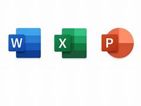

Microsoft 365
In dieser Woche haben wir viel über die Hardware des PCs gelernt.
Systeme
In den letzten Tagen haben wir uns viel mit verschiedenen Funktionen in Word beschäftigt. Zuerst haben wir uns die Kopf- und Fusszeilen angeschaut. Wir haben das aktuelle Datum in die Fusszeile eingefügt, damit es automatisch angezeigt wird, wenn das Dokument geöffnet wird. Ausserdem haben wir die Seitenzahlen angepasst, sodass jede Seite richtig nummeriert ist. In die Kopfzeile haben wir unsere Namen und das Thema des Dokuments geschrieben, um es übersichtlicher zu machen.Danach haben wir uns die Überschriften angeschaut. Bei der Überschrift 2 haben wir den Abstand vor dem Text auf 30 Punkte geändert, um mehr Platz zu schaffen. Bei der Überschrift 1 haben wir einen Seitenumbruch oberhalb eingefügt. Wir haben auch gelernt, wie man Bilder einfügt und bearbeitet. Zu jedem Bild haben wir eine Bildbeschreibung hinzugefügt, um zu erklären, was im Bild zu sehen ist. Um sicherzustellen, dass Bild und Beschreibung zusammenbleiben, haben wir sie gruppiert, damit sie beim Verschieben nicht getrennt werden.Zusätzlich haben wir ein Lineal an der Seite des Dokuments eingeblendet, um die Ausrichtung von Text und Bildern besser kontrollieren zu können. Zum Schluss haben wir noch die Funktion "=Lorem()" kennengelernt, mit der man Blindtext einfügen kann, um das Layout zu testen. Fazit